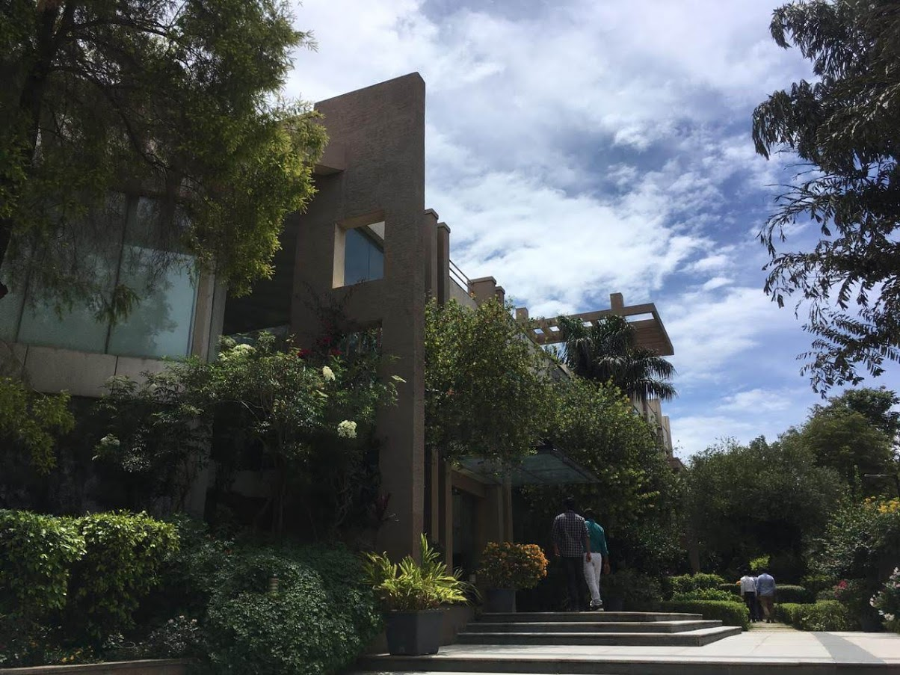
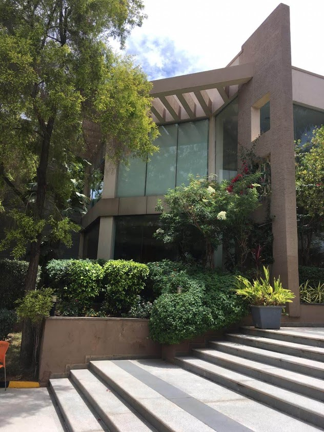
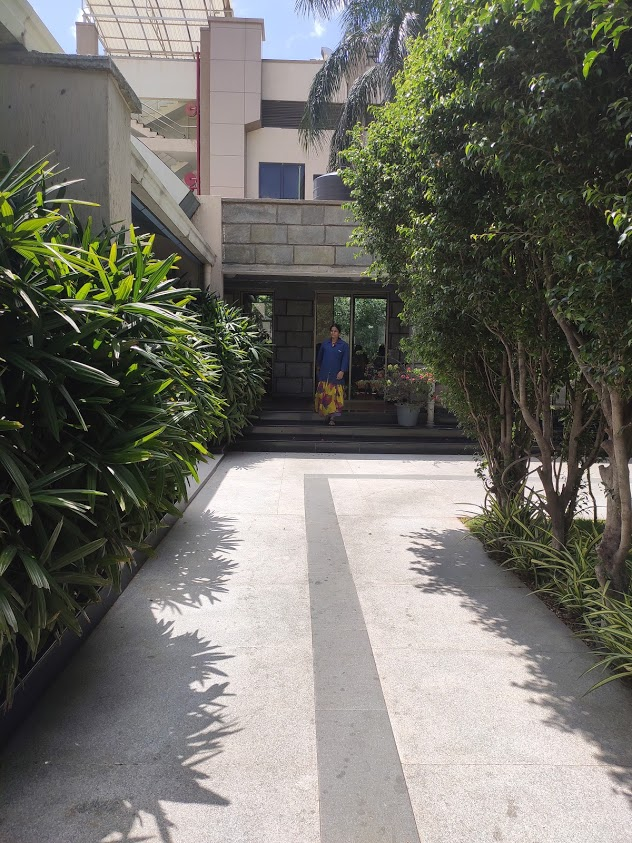
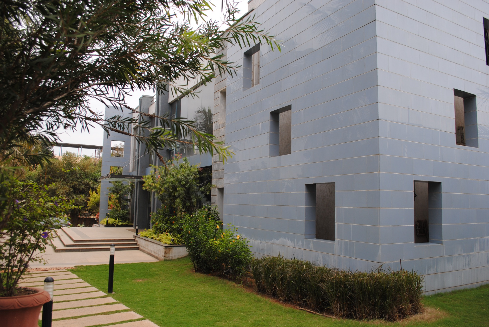
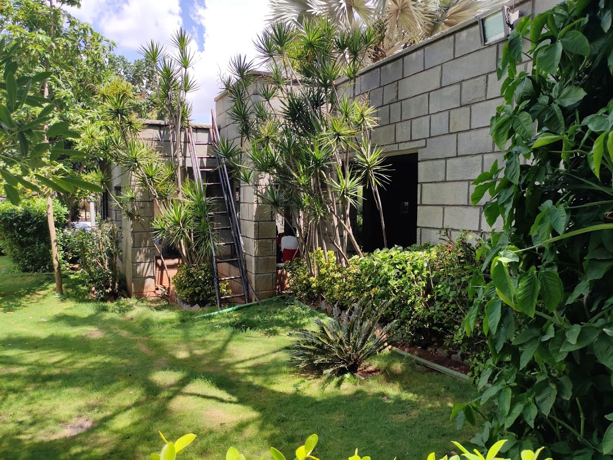
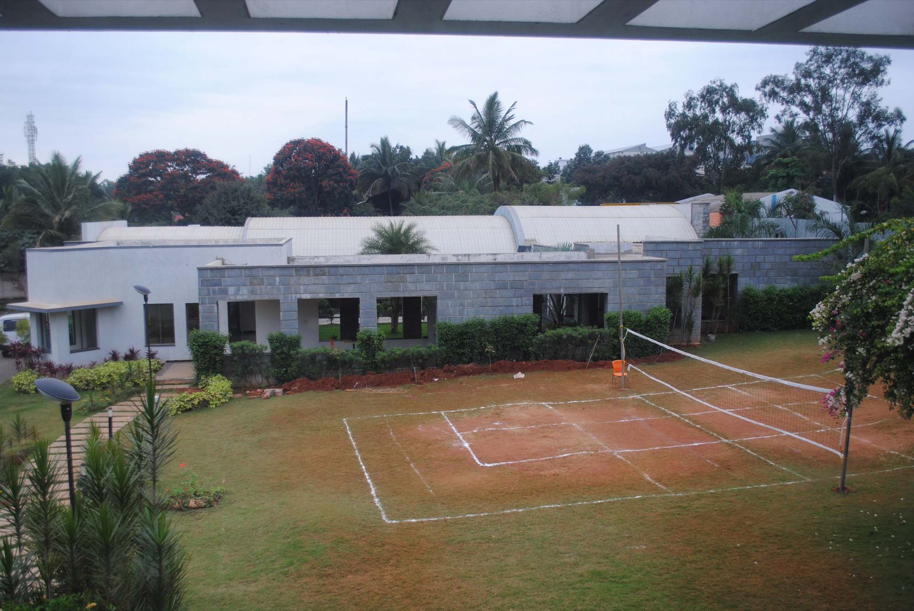
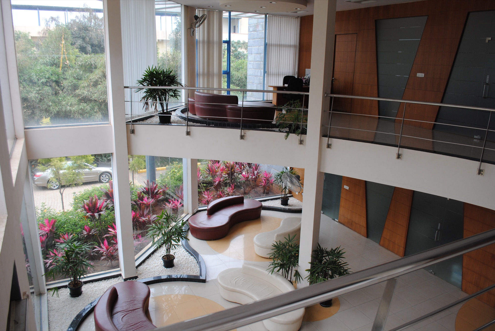
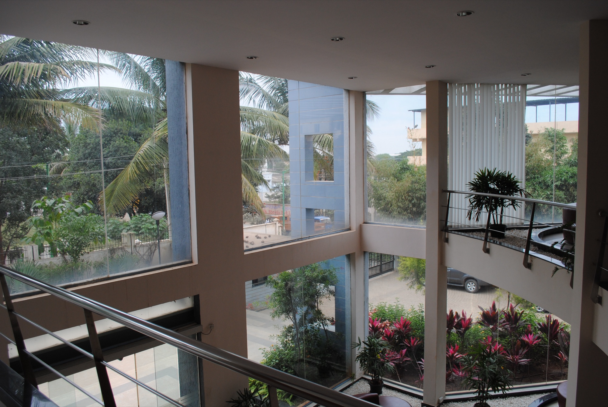
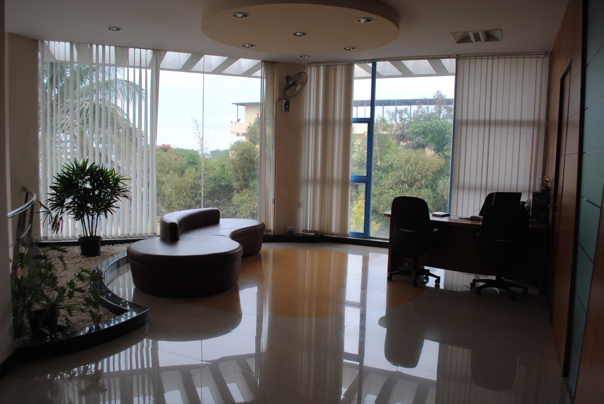

Anthem Biosciences Campus

Overview
This five-acre campus in Bangalore houses the factory and offices of Anthem Biosciences, a contract research, development and manufacturing organisation that serves pharmaceutical and biotech companies. With a built-up area of around 60,000 square feet and space for some 300 people, it took a question we had long asked in schools into a new setting: how does the place where people spend their days affect how they feel, and how well they work?
Industrial and corporate campuses are often designed with function alone in mind. Factories become sealed boxes; offices become rows of desks under artificial light; the land around them becomes car parks and leftover space. Such buildings may work efficiently, but they rarely give anything back to the people inside. Anthem wanted something different, and we set out to break away from conventional industrial and corporate architecture.
The starting point was the landscape. Rather than treating the site as a plot to be filled, we developed an extensively landscaped masterplan that puts green space and natural elements first. Buildings are set within gardens and planted courts rather than surrounded by tarmac, so that everyone on the campus — in the laboratories, the production areas or the offices — has a connection to greenery and the outdoors. The landscape provides shade, softens the buildings and creates pleasant places to walk, pause and meet through the working day.
Within this setting, the buildings had to meet the exacting requirements of a biosciences company. Laboratory and production spaces demand precision: controlled environments, careful separation of functions, clear and efficient movement of people and materials, and compliance with stringent regulatory standards. We planned the campus so that these operational requirements are met clearly and rigorously. The clarity of the plan is what makes the rest of the design possible: once the operational logic is right, the buildings can be shaped around the people who use them.
Daylight was central to that. Wherever the technical requirements allowed, offices, laboratories and shared spaces were designed to receive natural light and views of the landscape. Daylight makes spaces more pleasant, reduces dependence on artificial lighting and has a well-documented effect on wellbeing and alertness. Together with the green surroundings, it creates a working environment that feels calm and humane rather than industrial.
The design balances aesthetic appeal with function throughout. The buildings keep the professional standards expected of a modern research organisation while offering a warm, inviting atmosphere for employees and visitors. Materials, colours and finishes were chosen to convey quality and care.
Much of our practice is devoted to schools, where we design spaces that inspire children to learn. Anthem showed us that the same principles hold in a workplace. Whether we are designing for students or scientists, the aim is the same: dynamic environments that foster positivity, energise people, support them in their work and give them a sense of comfort and wellbeing through the day.
The Anthem campus demonstrates that an industrial facility does not need to look or feel industrial. With a thoughtful masterplan, a generous landscape and close attention to the experience of the people inside, a factory and office complex can become a genuinely good place to work — one that serves both the operational needs of the business and the wellbeing of the people who keep it running.
Architects — Kumar & Swamy Architects, Bangalore









Planning a school or campus?
Tell us about your institution — a new campus, an extension, a master plan or a renovation. Every project starts with a conversation.